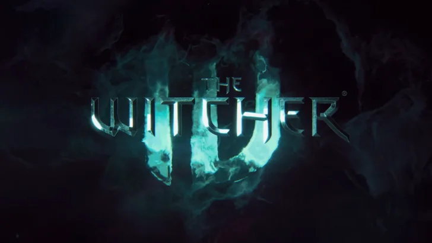
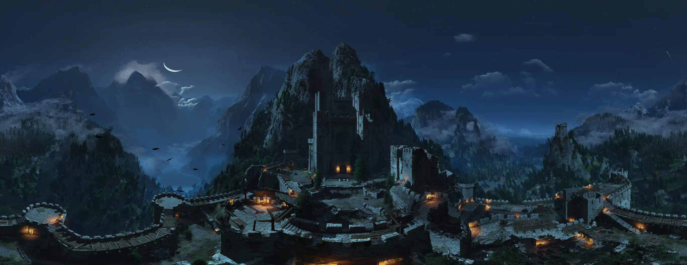
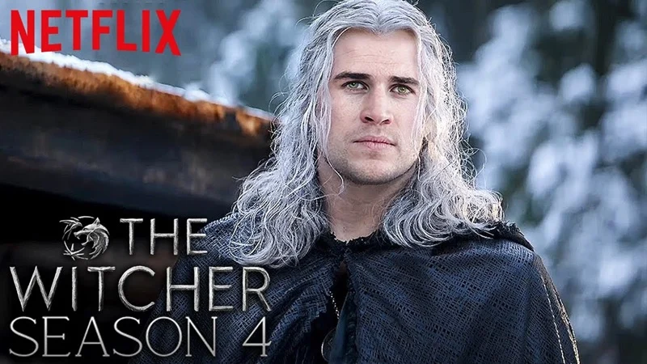
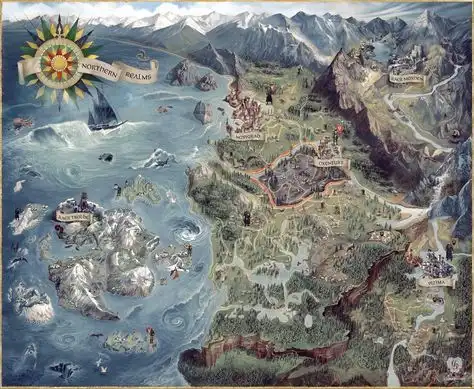

The Witcher 4 continúa su desarrollo
La nueva saga de CD Projekt Red sigue en producción, con Ciri como figura central.

Una mirada unificada a la saga de CD Projekt Red y a la adaptación de Netflix, conectadas por el universo creado por Andrzej Sapkowski.
The Witcher nació en la literatura de Andrzej Sapkowski y convirtió la fantasía oscura europea en un escenario de monstruos, política, magia y dilemas morales. Geralt de Rivia es el eje de muchas de estas historias, pero el verdadero protagonista es un continente donde casi nunca existe una decisión completamente limpia.
CD Projekt Red tomó ese material como punto de partida para construir una continuidad propia en videojuegos. La trilogía principal comienza después de los acontecimientos de los libros y utiliza sus personajes, conflictos y mitología para contar nuevas aventuras interactivas.
Netflix, en cambio, adaptó principalmente las historias literarias. Sus primeras temporadas recorren relatos y acontecimientos que preceden a la continuidad de los juegos, con una puesta en escena y decisiones de adaptación propias.
Por eso, este sitio no trata juego y serie como si fueran exactamente la misma continuidad. Los conecta allí donde comparten personajes, temas y mundo, y marca las diferencias cuando son importantes.
La idea es sencilla: entrar por cualquier puerta —historia, personajes, juegos o serie— y terminar entendiendo cómo las distintas versiones forman parte del mismo fenómeno cultural sin borrar sus diferencias.
Cronología integrada y diferencias entre adaptaciones.
Comparativas entre sus versiones interactivas y televisivas.
La trilogía de CD Projekt Red y sus expansiones.
Temporadas, casting y evolución de la adaptación.
Espacio preparado para reemplazar placeholders por imágenes autorizadas.
Datos curiosos y un quiz para medir cuánto conocés.

La nueva saga de CD Projekt Red sigue en producción, con Ciri como figura central.

Liam Hemsworth tomó el papel de Geralt para las dos temporadas finales.

Una guía para entender qué comparten y dónde se separan las continuidades.
La espada de plata está pensada principalmente para monstruos, mientras que la de acero se usa principalmente contra humanos y otras criaturas vulnerables al acero.
Más trivia